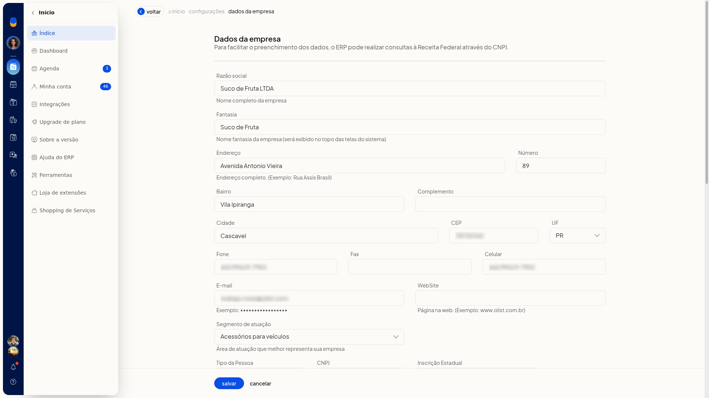
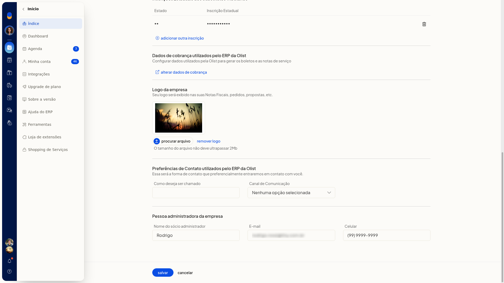

Configurar os dados da empresa
A tela Dados da empresa, no ERP da Olist, permite revisar e atualizar o cadastro já existente da empresa: identificação, endereço, contatos, dados fiscais e o logotipo exibido em notas fiscais, pedidos e propostas.
Você informa inscrição estadual, inscrição municipal, inscrição Suframa, CNAE e regime tributário, inclui inscrições estaduais de substituto tributário e envia o logotipo. O texto da página informa que o ERP pode consultar a Receita Federal pelo CNPJ para facilitar o preenchimento.
Pré-requisitos
- A empresa já precisa estar cadastrada. A tela altera o registro existente e não cria uma nova empresa.
- A tela não fica disponível para empresas no plano Conta Digital.
- Se a opção não aparecer para você, peça acesso ao administrador da conta.
Importante
- Nenhum campo desta tela é marcado como obrigatório.
- O CNPJ já vem preenchido e não pode ser alterado nesta tela. Não há botão para consultar a Receita Federal.
- Ao alterar o Código de regime tributário, as naturezas de operação deverão ser reconfiguradas de acordo com as regras tributárias do novo regime.
- A Inscrição Suframa, quando usada, tem 8 ou 9 dígitos. Ela é obrigatória em operações com benefício de alíquota zero da CBS em áreas sob controle da SUFRAMA.
- O arquivo do logotipo não deve ultrapassar 2Mb.
- A inscrição estadual de substituto tributário só é gravada em Salvar. Voltar descarta a linha incluída e ainda não salva.
- remover logo pede confirmação. Se você confirmar, o logotipo é removido de forma persistente.
Instruções
-
Acesse Configurações > Configurações do Sistema ERP.
-
Na aba Geral, clique em Alterar dados da empresa.

-
Revise identificação, endereço e contatos.

Identificação, endereço e contatos
- Razão social: nome completo da empresa.
- Fantasia: nome fantasia. Ele é exibido no topo das telas do sistema.
- Tipo da Pessoa: Pessoa Jurídica ou Pessoa Física.
- Endereço, Número, Bairro, Complemento e Cidade.
- CEP.
- UF: selecione a opção.
- Fone, Fax e Celular.
- E-mail.
- WebSite: página na web.
- Segmento de atuação: selecione a área que melhor representa a empresa.
- Como deseja ser chamado.
- Canal de Comunicação: E-mail ou WhatsApp.
-
Nos dados fiscais, confira o CNPJ já preenchido.
-
Para isenção de inscrição estadual, marque IE Isento.

Inscrição Estadual passa a exibir ISENTO e fica somente leitura. Desmarque IE Isento para limpar o campo e voltar a editá-lo.
-
Preencha Inscrição Municipal, Inscrição Suframa (8 ou 9 dígitos, quando houver) e CNAE, como 6203-1/00.

-
Em Código de regime tributário, selecione uma opção:
- Simples nacional
- Simples nacional - excesso de sublimite de receita bruta
- Regime normal
- Microempreendedor Individual (MEI)
Leia o aviso do campo: ao alterar o regime, as naturezas de operação deverão ser reconfiguradas de acordo com as regras tributárias do novo regime.
-
Em Inscrições Estaduais dos Substitutos Tributários, clique em adicionar outra inscrição.

-
Escolha a UF, informe a inscrição e inclua a linha. Ela permanece na tabela apenas até Salvar.

-
Em Logo da empresa, clique em procurar arquivo e envie uma imagem de até 2Mb. A logo é exibida em notas fiscais, pedidos e propostas. Para excluir, clique em remover logo e confirme Deseja remover o logotipo da empresa?.

- Em Pessoa administradora da empresa, preencha Nome do sócio administrador, E-mail e Celular.
- Clique em Salvar para gravar identificação, endereço, contatos, dados fiscais, inscrições de substituto tributário e logotipo. Voltar sai sem gravar e descarta a linha de inscrição de substituto incluída e ainda não salva.
Resultado
Depois de Salvar, os dados cadastrais, fiscais e o logotipo ficam gravados no cadastro da empresa. A inscrição de substituto tributário só permanece se tiver sido salva.
Informações adicionais
- A tela não mostra importação por planilha nem ação de integração para estes dados.